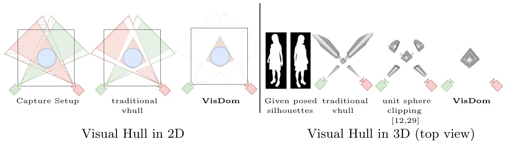
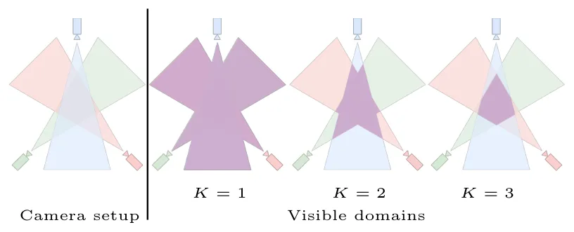
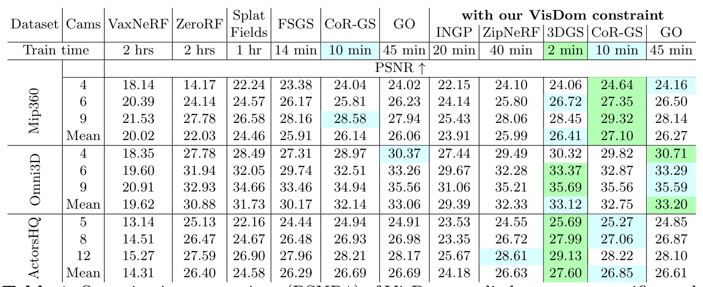

VisDom：带可见域约束的稀疏新视角合成VisDom: Sparse Novel View Synthesis with Visible Domain Constraint
与 SLAM 直接关系较弱，但对稀疏视角三维重建、物体级 Gaussian 初始化和主动视角规划有借鉴价值。
一句话工作总结
VisDom 在 visual hull 上加入“至少 K 个视角可见”的几何约束，指导 NeRF 采样和 GS 放置，缓解稀疏视角重建伪影。
摘要
Sparse novel view synthesis 由于需要从少量输入视图恢复三维几何而非常困难。NeRF 与 Gaussian Splatting 方法在 dense supervision 下表现良好，但在稀疏设置中容易过拟合，产生漂浮伪影和不一致几何。Silhouette consistency 常用作正则，但仍不足，因为满足 silhouette 的区域可能延伸到真实物体之外。本文提出 VisDom，一个无需学习的几何约束：在经典 carving-based visual hull reconstruction 基础上，要求空间点满足最小多视图可见性。具体来说，visible domain 定义为至少被 K 个视图观测到的三维空间子集，并作为标准 silhouette-based reconstruction 之上的额外过滤条件。该约束为稀疏视角设置提供更强空间先验。作者将 VisDom 集成到 NeRF 和 GS pipeline 中，分别限制 volumetric sampling 和指导 Gaussian placement。三个数据集实验显示，VisDom 能从少至四张图像提升高质量 object-centric reconstruction；在 GaussianObject 上进一步提升 Omni3D 和 MipNeRF360 表现，并以 22 倍更低训练成本达到或超过部分结果。
Sparse novel view synthesis (NVS) remains challenging due to the ambiguity of recovering 3D geometry from few input views. While NeRF- and Gaussian Splatting (GS)-based methods perform well with dense supervision, they often overfit in sparse settings, producing floating artifacts and inconsistent geometry. Silhouette consistency is commonly used as a regularizer, but it remains insufficient, as silhouette-consistent regions can extend beyond the true object geometry. We introduce VisDom, a learning-free geometric constraint that augments classical carving-based visual hull reconstruction by enforcing a minimum multi-view visibility requirement. Specifically, we define a visible domain as the subset of 3D space observed by at least $K$ views and use it as an additional filtering criterion on top of standard silhouette-based reconstruction. This provides a stronger spatial prior in sparse-view settings. We integrate VisDom into both implicit (NeRF) and explicit (GS) pipelines by restricting volumetric sampling and guiding Gaussian placement during optimization. Experiments on three challenging datasets show consistent improvements in sparse-view NVS, enabling high-quality object-centric reconstruction from as few as four input images. Our method is domain-agnostic, requires only silhouettes, and introduces no learned parameters, making it a simple complement to existing approaches. Applying VisDom on top of GaussianObject further improves performance on Omni3D and MipNeRF360, while matching or surpassing it at 22 $\times$ lower training cost.
中文解读摘录
- 链接：abs / PDF；作者：Mariia Gladkova*, Tarun Yenamandra*, Edmond Boyer, Robert Maier, Tony Tung, Daniel Cremers；类别：cs.CV；采集 score=4。
- 核心思路：为 sparse-view NVS 引入 learning-free 的 visible domain 几何约束：在传统 silhouette visual hull 上，要求 3D 空间点至少被 K 个视角观测，从而减少稀疏视角下的 floating artifacts 和几何不一致。
- 方法要点：该约束可集成到 NeRF 的 volumetric sampling 和 Gaussian Splatting 的 Gaussian placement 中；摘要称少至 4 张图像也可提升 object-centric reconstruction，并在 GaussianObject 上以 22× 更低训练成本达到或超过部分结果。
- 关注点：与 SLAM 前端关系间接，但对少视角三维重建、物体级 GS 初始化、机器人主动视角选择有借鉴价值。
图表/页面预览

{kind=link}

{kind=link}

{kind=link}
